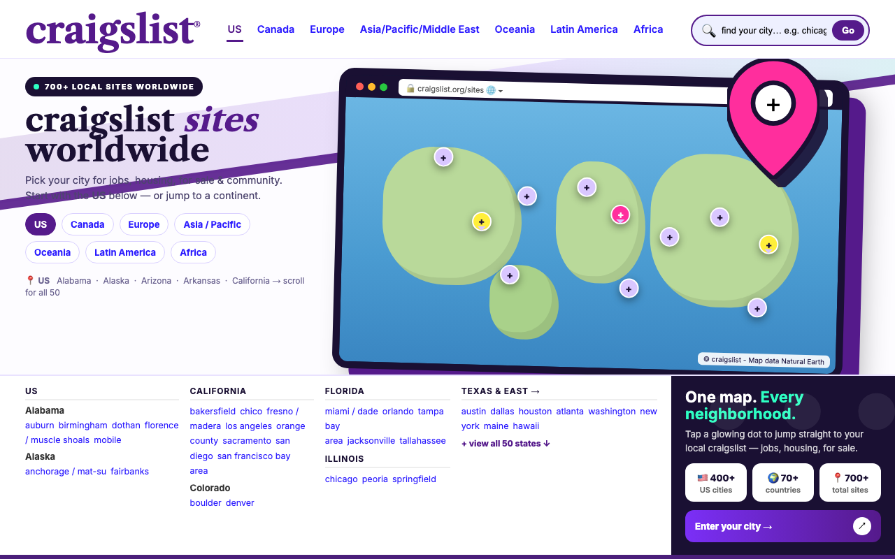

BEFORE · the live site

ui_score 0.473 · aesthetic top 17% · attention top 52% · judge 0.31
Object-shape (LO) and motion (MT) areas are low: a text-first screen with no clear object silhouette
Attention drops after the first 2 s (+0.41 → +0.23): nothing to look at after the first impression
Attention drops after the first 2 s (+0.41 → +0.23): nothing to look at after the first impression
AFTER · BrainSense loop r1

ui_score 0.594 · aesthetic top 15% · attention top 45% · judge 0.53
Object-shape (LO) and motion (MT) areas are low: a text-first screen with no clear object silhouette
Attention drops after the first 2 s (+0.53 → +0.33): nothing to look at after the first impression
Attention drops after the first 2 s (+0.53 → +0.33): nothing to look at after the first impression